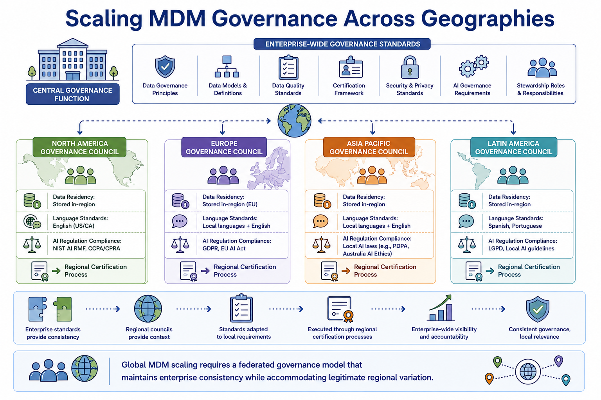
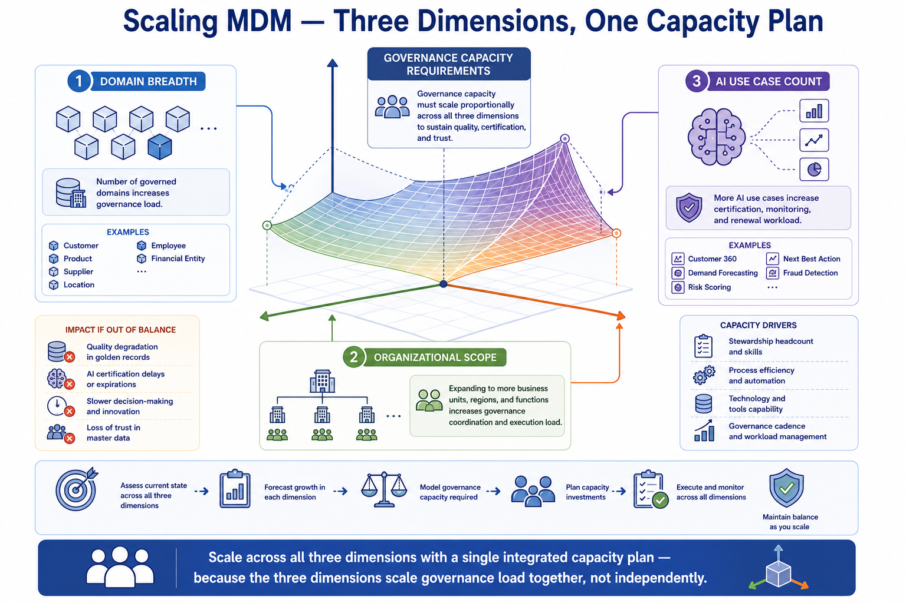

Scaling MDM Programs
Module support notes
The Governance Cost of Unplanned Scaling
Unplanned scaling consistently produces the same sequence of consequences — exception backlogs accumulate because stewardship capacity is insufficient for the volume generated by new domains, AI certification renewals fall behind because the certification workflow was designed for a smaller AI portfolio, quality issues that would have been caught early under normal operational capacity are missed until they affect AI model performance, and stakeholder confidence erodes as the governance program becomes associated with delays and overload rather than reliability and responsiveness.
Each of these consequences is more expensive to recover from than to prevent — making pre-scaling capacity planning one of the highest-return investments in MDM program management.
Warning
The cost of unplanned scaling is paid in quality degradation, AI delay, and stakeholder trust — all of which are more expensive to recover than to prevent. Exception backlog, AI certification delays, remediation cost, and stakeholder confidence loss each compound the others. An AI team that waits three weeks for a certification that should take two days doesn't just experience one delay — it loses confidence in the governance program and begins building informal data access workarounds that persist long after the backlog clears.

Scaling Governance for Global Organizations
Global MDM scaling introduces governance complexity that purely organizational scaling does not — data residency requirements that constrain which records can be governed from which location, local data standards that vary from enterprise-wide standards for legitimate cultural or linguistic reasons, and jurisdiction-specific AI regulation that may impose different requirements on AI certification processes in different regions.
A federated governance model — enterprise standards set centrally, regional adaptation managed locally with central oversight — is the standard approach for global MDM programs. The governance evolution required to implement this model is itself a scaling activity that should be planned as part of the organizational expansion roadmap rather than discovered as a gap when the first cross-border governance conflict arises.
Note
Global MDM scaling requires a federated governance model that maintains enterprise consistency while accommodating legitimate regional variation. Regional adaptations that are expected and planned — data residency constraints, local language master data standards, jurisdiction-specific AI regulation — are manageable. Regional adaptations discovered mid-program after cross-border conflicts arise require emergency governance redesign that disrupts active AI programs depending on the affected domains.

MDM scales across three dimensions simultaneously — and governance capacity must scale proportionally across all three, not just the most visible one.
